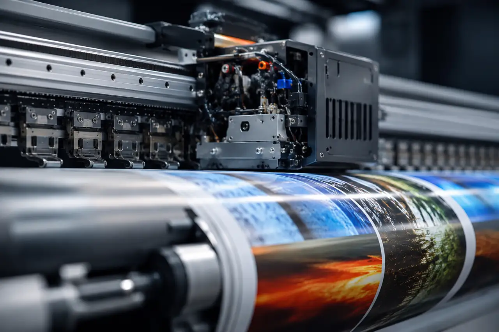

Survey the brief
Understand the environment and communication goal.
SERVICE 04 / BRAND ENVIRONMENTS
Large-format print production planned for displays, signs and physical brand environments within confirmed project scope.
START WITH THE APPLICATION
Every project starts by understanding where the print needs to live, what the artwork needs to communicate and which physical conditions shape the production route.

Understand the environment and communication goal.
Review artwork, size and relevant production requirements.
Move forward through the confirmed project scope.
PROJECT ENQUIRY
Tell HDC what needs to be printed, its intended surface or material, your quantity and artwork status. Surface suitability for UV DTF is always reviewed before proceeding.
Request a quote